前一段时间做毕设，平常就没太多时间做别的东西了，现在暂时没有那么忙了
就准备继续学一些pwn和reverse的东西，每天刷上一些题吧
这个文档准备写所有的1分pwn题的wp
由于还没写完，里面的有些图片还没设置好，网上看应该是看不了的
RIP
首先程序拖到IDA看一下代码
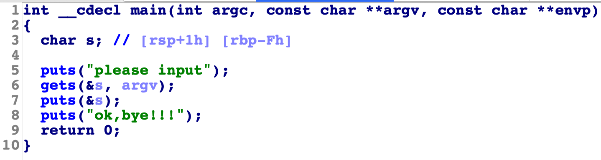
main函数的内容就这么短，是一个gets引起的溢出，看到这个char s距离rbp有Fh
侧边看到还有一个fun函数
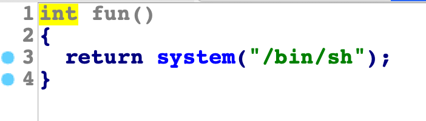
内容直接返回了一个shell
栈内的数据由近到远依次是局部变量、rbp，最后是返回地址
应该要覆盖返回地址到fun函数这里，这个值是0x401186
需要覆盖fh个字节的数组s的空间，以及8个字节的ebp
最后填写返回地址
按照这个逻辑写出来的payload是下面这样的
1 | from pwn import* |
但是不知道为啥执行出来不是这么个效果
在网上查了一些给的exp也是这样的，感觉有点问题
最后发现这样的两个exp可以执行出结果
1 | payload='a'*23+p64(0x401198)+p64(0x401186) |
有点疑惑，15个a的难道不是覆盖了rbp吗，好像没有覆盖返回地址呀
23个a的那个里面0x401198是fun函数结束的地址
没想明白是怎么回事，查到了一个资料这样写着
看了网上那些wp，经过研究思考发现，应该是他们使用23个‘a’覆盖时，多覆盖了8个’a‘，将Main函数栈顶覆盖了。我们知道call指令是先将当前ip指向位置压入栈的，多覆盖8字节正好将ip覆盖了，导致无法返回，从而get shell失败。
解决办法：payload=‘a’ * 23+ p64(0x401198) + p64(0x401186) #0x401198为返回地址
感觉不太对，但是目前还没想明白这个原因是什么
warmup_csaw_2016
首先查看一下安全措施
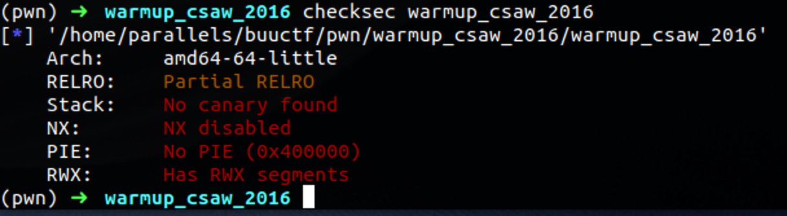
全都没开，毕竟是一道一分题，应该不会太难
运行一下的效果，一个输出一个输入然后结束
拖到IDA里面看一下
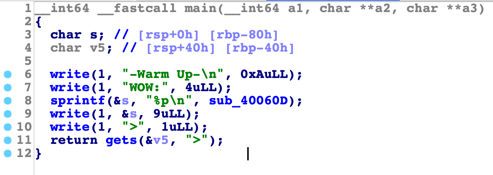
几个输出之后最后调用了一个gets函数
前面输出的内容中输出了一个函数的地址
这个函数内容就是cat flag
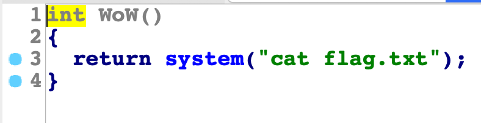
思路应该是差不多的，先填充v5到rbp的40h个字节
之后填充rbp，最后覆盖返回地址为WoW函数的地址
很奇怪的是，在本地运行的时候
1 | payload='a'*0x40+p64(0x40060d) |
这样可以得到结果，而加了8个字节之后就不行了
但是远程的时候
1 | payload='a'*(0x40+0x8)+p64(0x40060d) |
这样才能得到正确结果
怀疑是不是本地的虚拟机有点问题，可能是libc版本之类的
pwn1_sctf_2016
首先还是查看一下安全机制
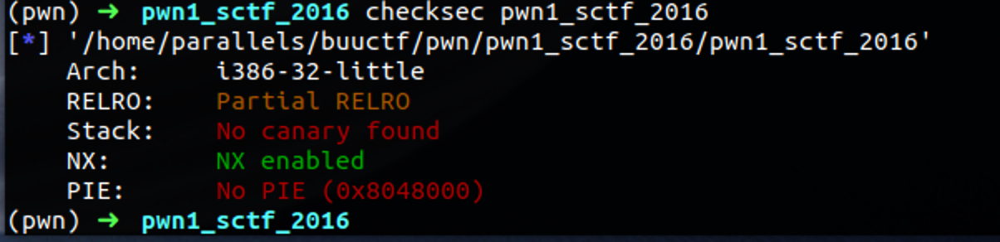
发现开启了NX，栈上禁止执行，但是这些简单的题目一般也用不到
拖到IDA里面看看
main函数直接调用了vuln
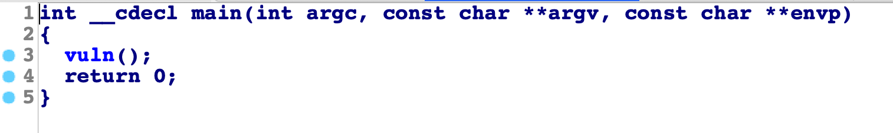
vuln里面就是一个printf一个fgets
中间对gets的输入做了一些处理
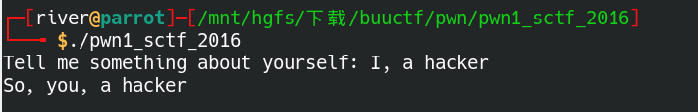
输入中的I会被替换为you
最后又使用strcpy填充回去s的位置
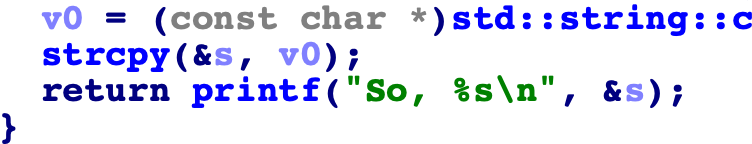
对输入本身存在长度限制，多于32长度的内容会被丢弃
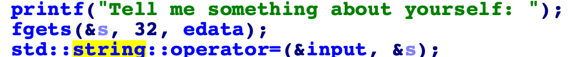
但是这个s数组和ebp相距0x3c，60显然是超过32的
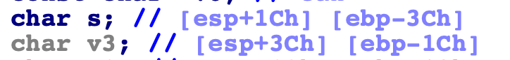
所以我们需要通过填充I，利用这个转换为you的机制填充中间的内容，最后覆盖返回地址为get_flag
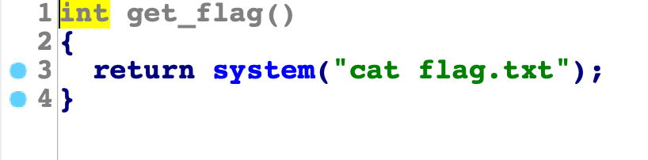
构造出exp
1 | from pwn import * |
ciscn_2019_n_1
首先检查一下保护机制
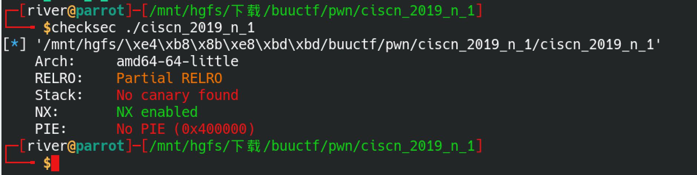
同样只有NX
main函数中的设置了一个buf，之后调用了另一个func
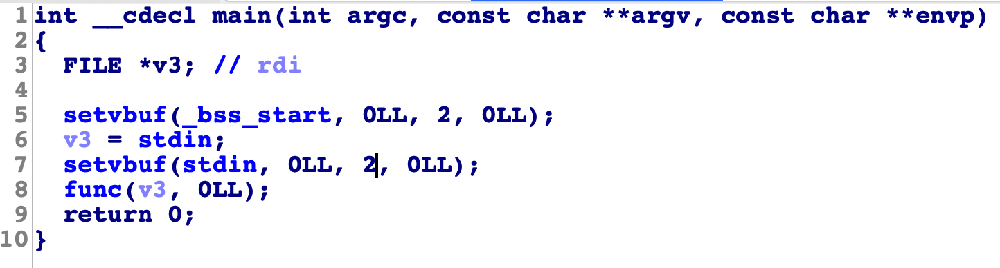
这个调用的func很神奇
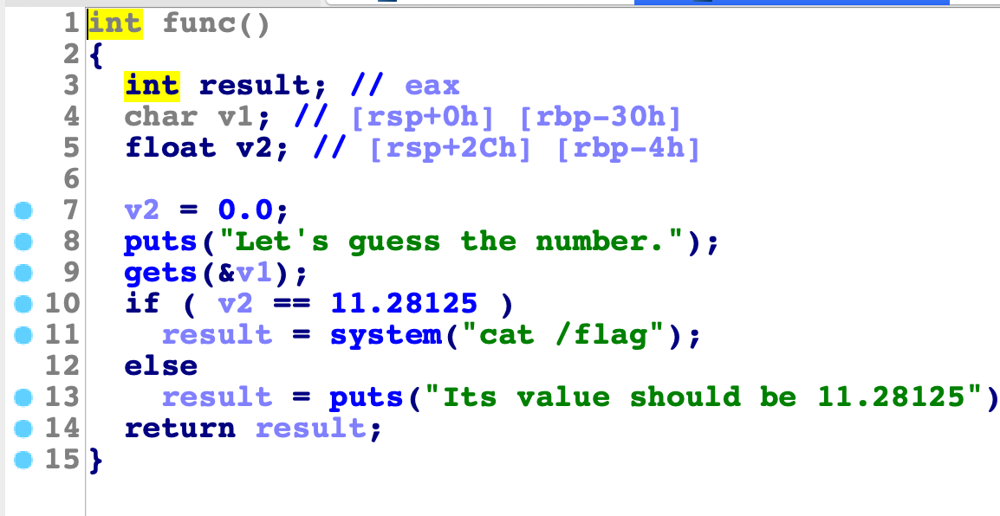
gets了一个v1
但是比较的却是v2的值，如果v2满足条件就可以执行
看到v1距离rbp有30h
v2距离rbp只有4h，因此首先要填补这之间的差值
之后加上一个float的值11.28125就可以了
这里python在计算float值时有点麻烦，不如直接在IDA里比对这个11.28125的二进制值
exp也比较简单
1 | from pwn import * |
ciscn_2019_c_1
程序分析
首先还是看一下安全机制
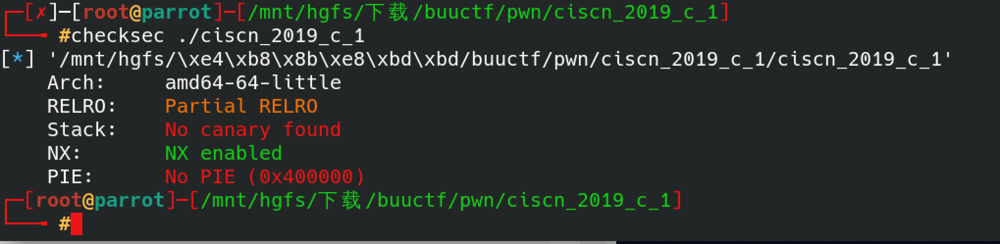
是个64位程序，开了NX
运行的时候是一个加密解密的程序
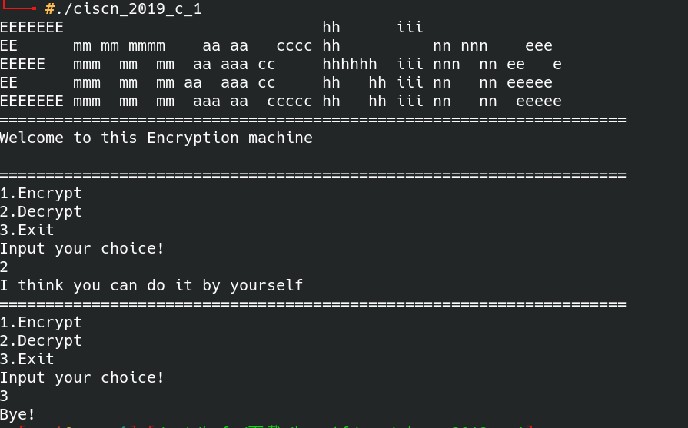
选择加密的话可以返回密文，但是选择解密会告诉你让你自己解
拖到IDA看一看
main函数代码反编译的挺清晰
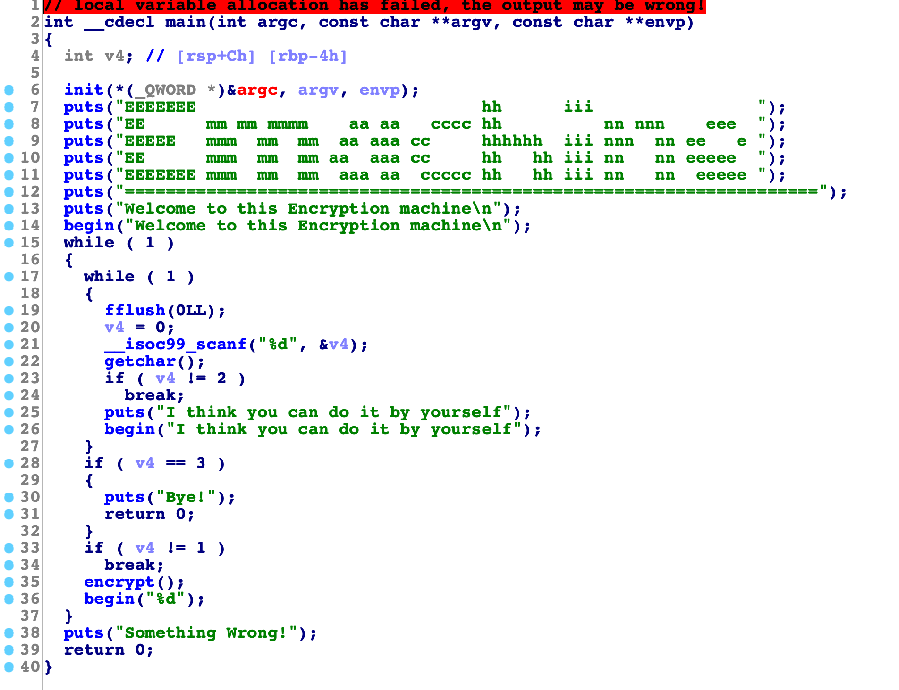
这里在加密时输入的内容比较长的话会出现段错误
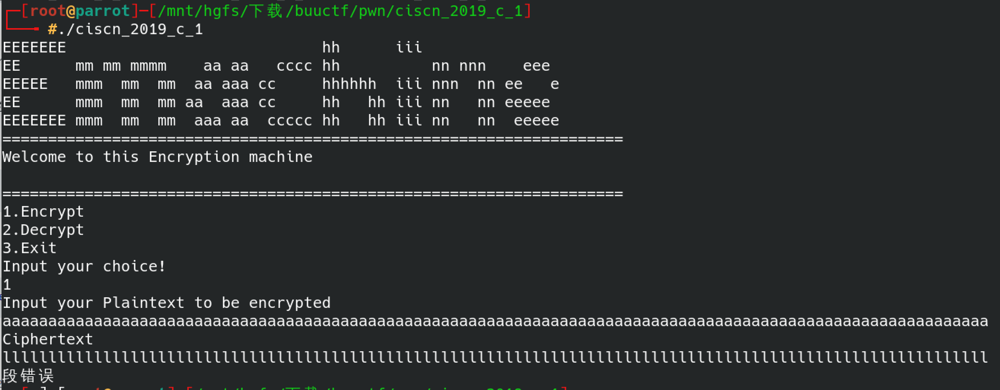
encrypt函数这里s数组在输入时可能会溢出
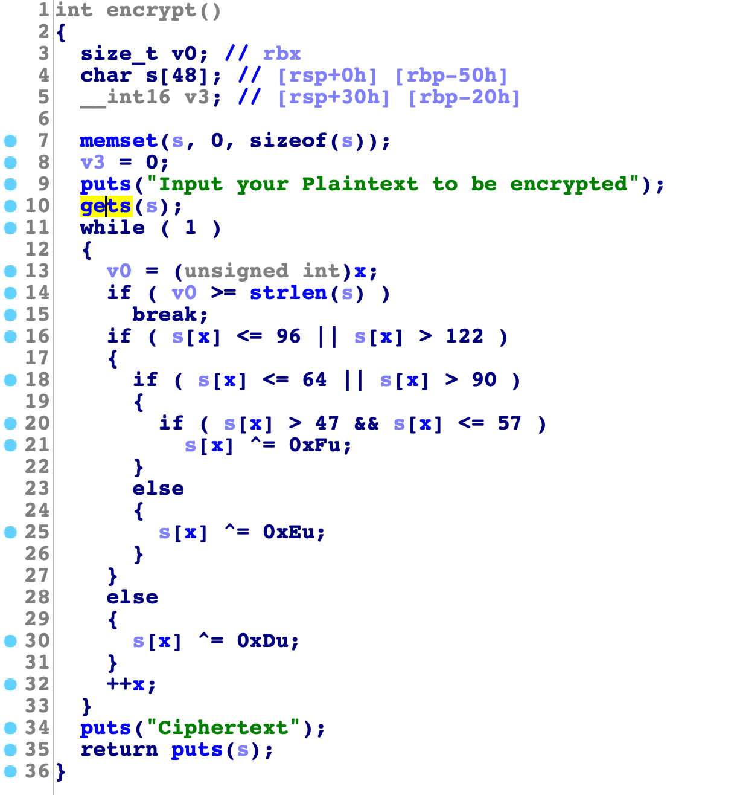
但是这次的程序里没有找到之前那几个题目里面那样可以直接得到shell或者是直接读flag的函数
所以需要ROP的技巧
查看got和plt表，发现没有exec和system之类的函数，所以不是简单的返回到代码段就可以做出来
这道题需要用ret2libc来做
- 泄漏出某个函数的地址
- 通过这个地址计算出libc的基址
- 计算
system('/bin/sh')的地址 - 再次溢出，跳到system函数得到shell
可以看到这个encrypt函数没有对s的输入长度进行限制，如果我们希望溢出的话，首先要覆盖50h长度到达rbp，之后覆盖8个字节，即64位的rbp，最后是返回地址
payloads大概是这样的:
1 | payloads = 'a'*0x50 + 'a'*0x8 + ret_addr |
payload编写
逆向代码中看到调用了puts，所以首先可以利用这个puts函数泄漏libc的基地址
64位程序传递参数时，如果参数少于7个，会依次放在rdi、rsi、rdx、rcx、r8、r9中
后面的参数才会放在栈中
所以首先要获取到的gadget就是能从栈中将数据传入到rdi的
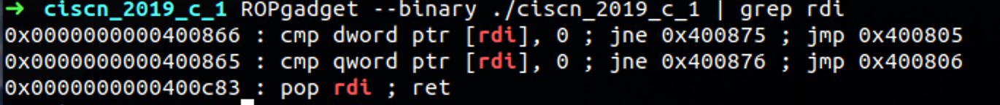
通过ROPgadget获取到pop rdi的地址
泄漏puts地址的思路主要是通过rop运行puts函数，同时控制参数使得输出的内容是puts在got表中的真实值，这样就可以输出puts在内存中的实际地址
1 | payloads = 'a'*0x58 + pop_rdi + puts_got + puts_plt + start |
这里面加入这一个start，是希望在执行完pop rdi; ret的时候能够回到程序开始的位置
但是实际上，构造好了payload之后，在encrypt函数return之前，对数组s进行了一个操作，就是上面逆向代码中循环的部分，好在这个操作不是很难，直接是通过ascii对字符简单的异或，因此我们的payload在发送之前也经过一个对应的解密操作就可以了
获取到puts的真实地址后就可以计算出实际的libc基地址
之后利用one_gadget搜索这个给定的libc中存在的execve("/bin/sh")
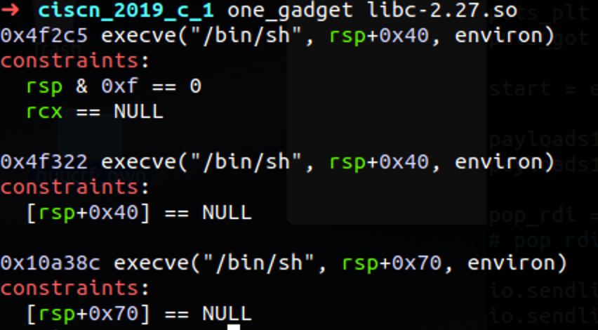
测试之后第二个地址是可以使用的，另外两个都会崩溃
通过偏移计算出对应的实际地址
最后再一次执行main函数，溢出到这个位置即可
1 | from pwn import * |
babyrop
基本分析
首先checksec检查安全机制
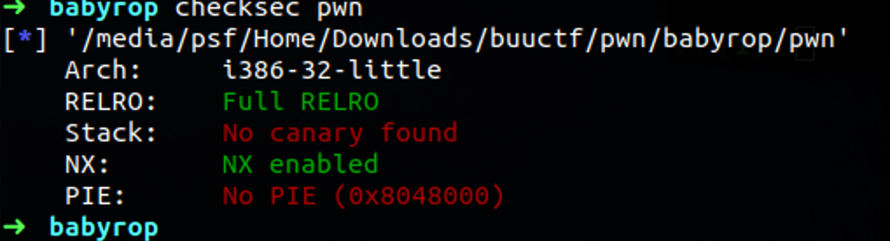
这还是很少见的开启Full RELRO的程序
拖到ida看一下主函数的逻辑
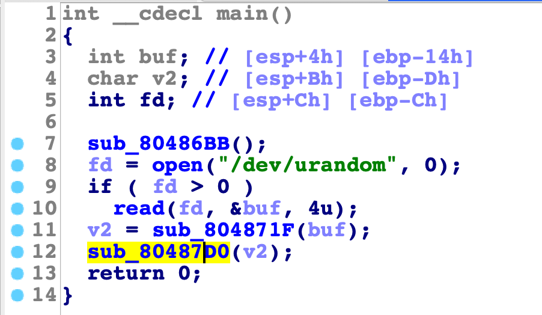
这个函数里面没有溢出点，打开了/dev/urandom读出其中4个字节，赋值给buf
之后buf再作为一个函数的参数，得到v2
最后再将v2作为参数传入一个函数运行，下面看一下这两个函数的逻辑
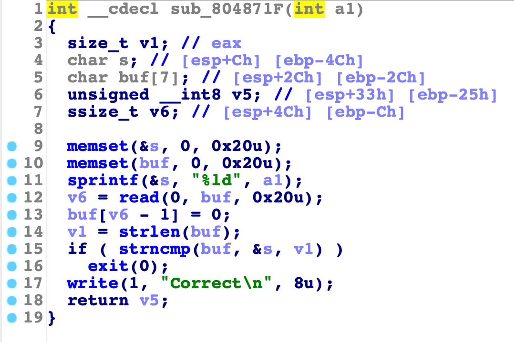
这个函数的参数是buf作为int的值，看到下面有一个strncmp的if语句，如果值为不为0就会导致直接exit
所以这里需要buf和s的值相等，向上倒推
局部变量buf是在上面read(0,buf,0x20u)从stdin输入的0x20个字节内容
而s是在sprintf(&s,"%ld",a1)这里被赋值为a1，即整个函数的参数，main函数中的buf
最终返回的这个v5乍一看不存在赋值的语句，但是实际上看到内存中buf位于ebp-2Ch，v5位于ebp-25h，而且这里read读取的过程允许读最多0x20的长度，因此是可以覆盖v5字节，控制返回值的
最后看一下上面v2作为参数的函数
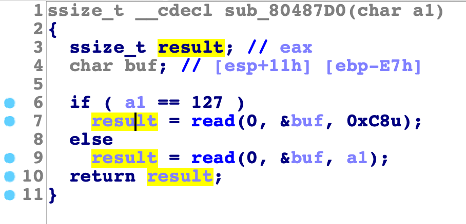
这个函数的输入是上面返回的v5，大小是我们可以控制的
当这个字节的值是127时，可以从stdin读取长度0xC8的内容，其他值时就可以读取a1长度的内容
而buf距离ebp有E7h，因此肯定要尽可能的大，这里尽量控制返回值为0xff，必须要求e7h以上才可以
编写payload
溢出sub_804871f
整体思路就是利用sub_804871F来溢出控制返回值v5，再利用sub_80487d0来溢出拿到shell
但是利用sub_804871f的前提是要绕过strncmp函数
仔细看一下这个比较
1 | v1=strlen(buf); |
这里控制比较长度的v1是利用strlen读取了buf的长度，而这个buf是我们可以人为控制的
并且strlen函数是遇到\x00字节就会停止的，因此可以控制v1为0，使得两个比较恒等
1 | payload = '\x00' + 'a'*6 + '\xff' |
这样就可以溢出sub_804871F，控制返回值v5值为0xff
溢出得到write真实地址
控制了返回值v5之后，在80487d0这个函数这里就可以读取长度ffh的内容了
这里payload就和常规的rop差不多了，首先泄漏write的地址，计算出libc基地址
之后利用gadget搜索跳转到execve("bin/sh")即可
首先是填充buf到ebp的e7h，之后填充4个字节的ebp，最后是返回值
这里因为程序之前运行过write，就直接暴露write的地址即可
1 | payload = 'a'*0xe7 + 'a'*4 + write_plt + start + 1 + write_got + 4 |
这个payload执行完成之后会输出write的真实地址，并且再一次回到程序开始运行的地方
之后计算出libc的基地址即可
溢出得到shell
在得到基地址之后，再一次执行上面的流程，跳到gadget的位置即可
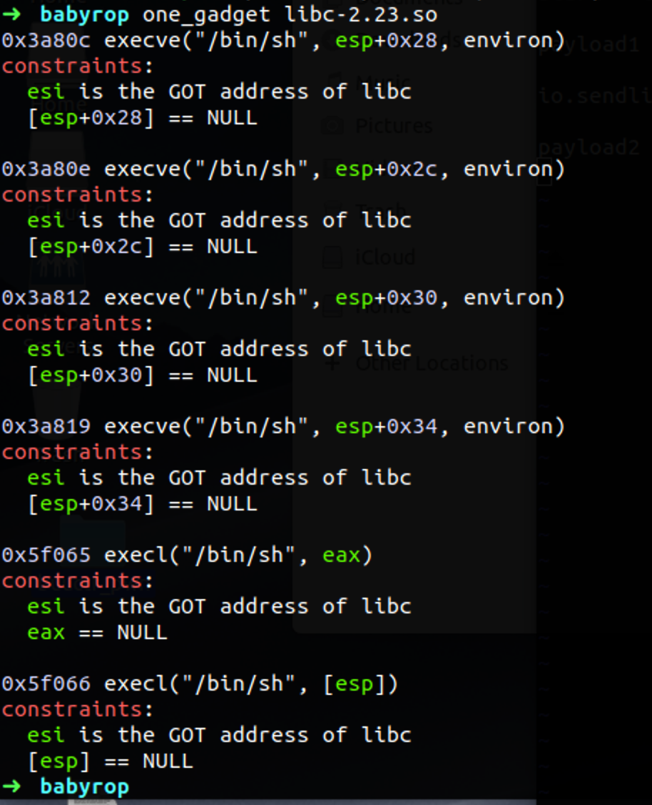
首先要把控制返回值v5的payload发送一遍，之后的payload应该是下面这样子
1 | payload = 'a'*0xe7 + 'a'*4 + p32(execve_sh) |
写payload的时候发现符号表里没有main，所以main的地址要用IDA直接看
one_gadget的这些gadget测试之后发现都没有办法成功拿到shell
所以要尝试一下system函数
这就需要再从libc的符号表读出来system的偏移
1 | from pwn import * |
调用system函数的时候，aaaa是system的返回地址，用来占位
ciscn_2019_en_2
基本分析
首先checksec检查安全机制
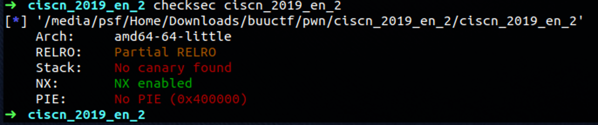
同样是开启了NX的程序
可能也是一道ROP的题目
看了逆向的代码之后发现和ciscn_2019_c_1几乎一样，两道题目唯一的区别就是之前那个题附带给了libc，这个题没有给libc的文件
所以主要改的地方就是libc的利用这里
从原本的直接读本地libc，改成利用LibcSearcher
两道题目甚至可以用同一个exp
get_started_3dsctf_2016
基本分析
首先看到main函数
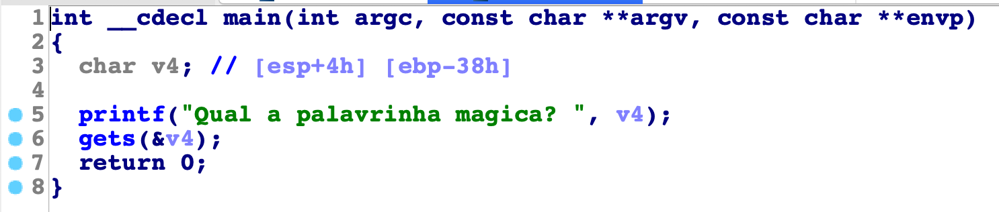
一个printf一个gets，main函数的逻辑还是挺简单的
看到旁边的函数，有一个get_flag
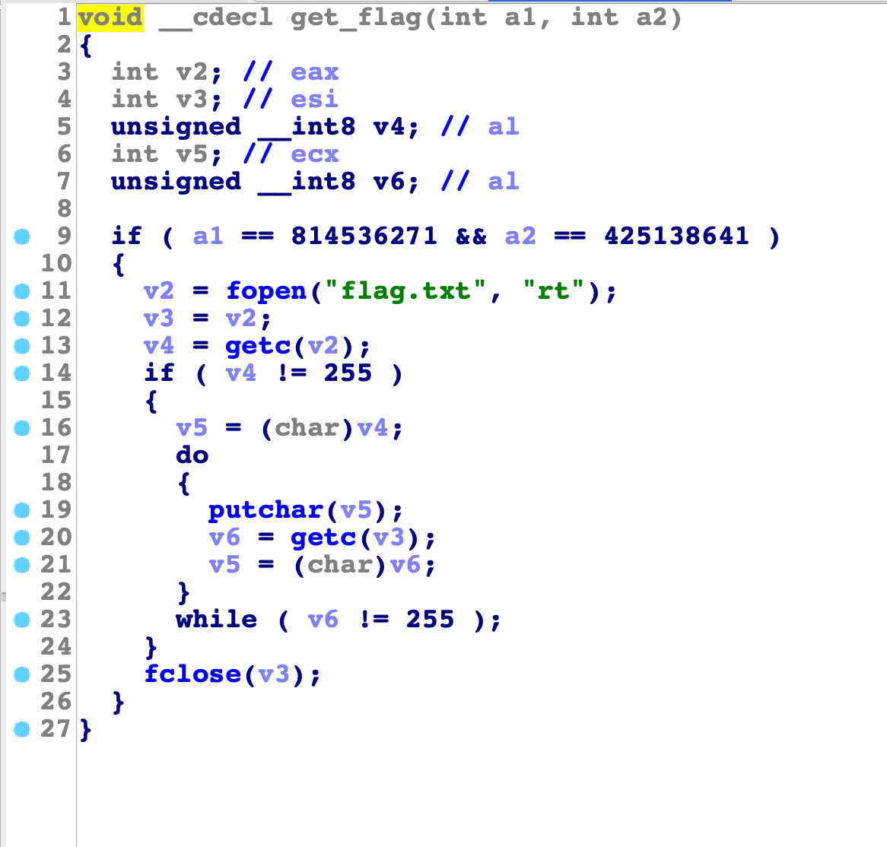
这里的get_flag不是简单的直接读文件，还存在两个条件判断，判断了a1、a2两个数的值
而这两个数是get_flag的参数，也就是说在构造payload的时候需要将a1、a2两个参数的值附上，或者需要直接跳转到这两个条件判断之后的代码
差点忘了要检查一下安全机制：
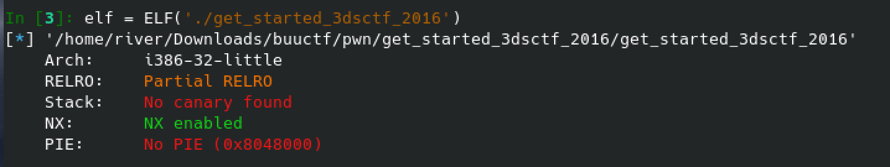
发现开启了NX，不过这里开了NX也影响不大，毕竟二进制程序本身就包含了读文件的函数，直接跳转过去执行就可以了
TextView里面看一下get_flag的地址偏移
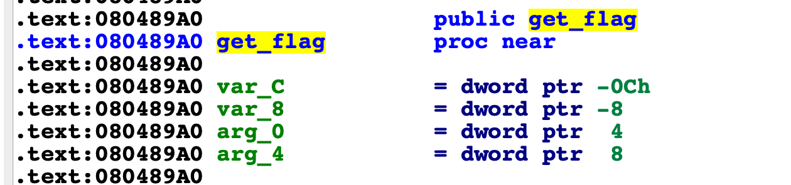
按着这个思路本来写了这样的一个payload
1 | payload = "a"*0x38 + "a"*4 + p32(0x80489a0) |
但是程序自己直接就退出了，而且连本来的printf都不输出了
改成
1 | payload = "a"*0x38 + p32(0x80489a0) |
这样之后，printf就可以输出了，但是还是没有读到flag里面的内容；这一步其实有些问题，为什么不用覆盖ebp呢，没有这四个a的话地址不是覆盖着ebp而不是ra吗？
之后如果改成
1 | payload = 'a'*0x38 + p32(0x80489b8) |
这样会直接跳到两个条件判断之后，就可以读出来flag的内容了
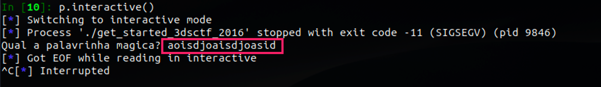
但是这样的程序其实是存在问题的，因为直接跳转到了flag函数的内部，会导致栈帧不平衡
看了网上的一些方法之后，其实还有更好的办法
函数表中存在一个mprotect函数
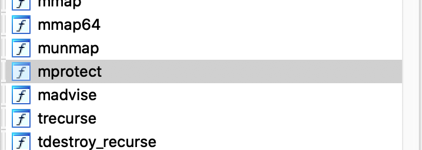
这个函数作用是修改用户态内存段的权限
1 | int mprotect(const void *start, size_t len, int prot); |
会把从start开始，长度为len的内存空间权限修改为prot
其中prot取值有四个
PROT_READPROT_WRITEPROT_EXECPROT_NONE
程序函数表中引入了这个函数，就可以首先用这个函数修改bss段中的一部分为可执行，之后用read函数写入shellode，最后再跳转到shellcode
指定的内存大小至少要是一个内存页(4k)，并且起始位置也必须是一个内存页的开始位置
首先可以看一下进程的内存空间，将进程后台运行后直接查看/proc/pid/maps，这里会写出来进程内存空间的权限和起始地址
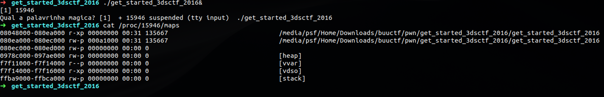
图例可以看到进程在80ea000到80ec000的区域是可以读写的，并且属于进程自己的空间
所以我们可以选这里的中间，80eb000这里开始，增加一段具有执行权限的区域，想要执行的语句应该是
1 | mprotect(0x80eb000,0x1000,7); |
这条指令之后，从0x80eb000这里到0x80ed000这一段内存就变成了可读可写可执行的权限，下面就需要向其中写入shellcode
调用mprotect这里函数结束之后，下面想要调用read函数，但是这时堆栈中mprotect的三个参数就占了位置，所以需要pop出来3个参数，调整堆栈，使得read函数的地址在栈顶，这样就可以直接用ret跳转到read函数的位置，所以用ROPGadget再搜索一下三个pop的gadget
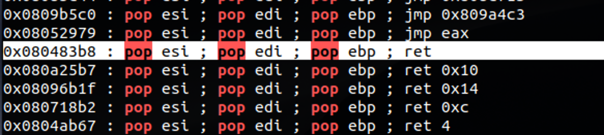
得到这样的一条指令。下面payload就需要调用mprotect，并且平衡堆栈
1 | payload = 'a'*0x38 + p32(mprotect) + p32(pop3) + p32(arg1) + p32(arg2) + p32(arg3) |
这三个pop的gadget的位置是mprotect执行完后的下一条指令
read函数定义如下
1 | ssize_t read(int fd,void *buf,size_t count;) |
这里想要执行的是将shellcode从输入直接写到内存，所以fd可以设为1，表示从标准stdin接受输入
1 | payload += p32(read) + p32(1) + p32(0x80ec000) + p32(0x1000) |
当read被执行之后程序应该是又一次进入了等待输入的状态，这时就发送另一个payload，用于获取到权限;这个可以用pwntools自带的shellcraft来生成
1 | payload2 = asm(shellcraft.sh(),arch='i386',os='linux') |
这个发送过去之后进入interactive状态就可以了
1 | from pwn import * |
第五空间2019决赛PWN5
分析
查看程序的安全机制

安全机制开启了好几个，除了PIE都开了
IDA反汇编查看main函数

设置了个随机数，读入两个输入，并和其进行比较，如果输入的pass和随机数相等则调用/bin/sh
这里两个输入都进行了长度限制，不存在直接溢出的问题
但是看到在printf密码之前，有一个printf(&buf)的语句
尝试运行输入很长的内容，可以看到输入出现了一些问题，因此可能是格式化字符串的漏洞

根据上面代码的思路，首先用格式化字符串漏洞打印出unk_804C044缓冲区中数字的值
之后再输入密码的时候输入这个数字就可以了
那么这里需要涉及到的问题就是格式化字符串漏洞的任意地址读问题
利用
输入aaaa以及若干个%x，可以根据输出中aaaa字符出现的偏移确定buf和栈帧的距离

Jarvisoj_level0
这道题就是一个很基础的pwn，溢出之后直接覆盖返回地址为get_flag的地址就可以
1 | from pwn import * |
[BJDCTF 2nd]r2t3
首先检查安全机制
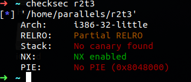
开启了NX；
运行一下，发现是一个需要输入用户名
查找对system函数的调用，可以发现存在一个后门函数dl_registery
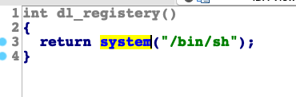
main函数中对输入的name做了一个检查
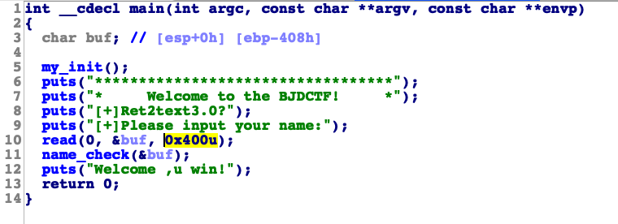
这里的name_check应该是一个长度检查的函数
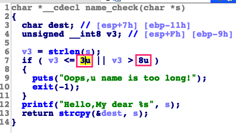
按说输入的name长度在4-8之间就可以通过，但是试了之后发现并不可以；
主要原因在于这个检查是和unsigned int比较的；
所以实际上这里输入的数字很大时可以绕过，因为v3是一个unsigned int8，所以最大255
这里要求4-8，所以可以用长度在255+4-255+8之间绕过，这样最低的8位是满足要求的
最后看返回的地方，是将可控的缓冲区s用strcpy复制到了dest这个地方；
这里距离堆栈还有0x11的距离，之后加上ebp的4个字节，一共需要填充0x15字节
1 | from pwn import * |
[BJDCTF 2nd]one gadget
程序是64位的，首先checksec
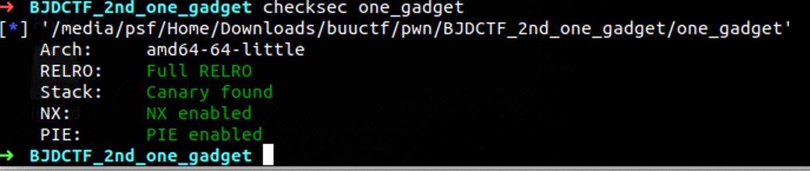
运行一下之后首先有一个说here is a gift for u
这里直接输出了printf的地址，拿这个地址可以去查到libc的基地址和版本
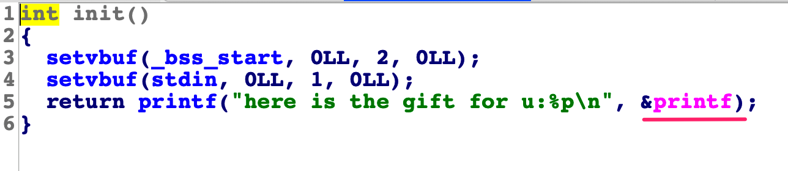
之后要求输入一个gadget
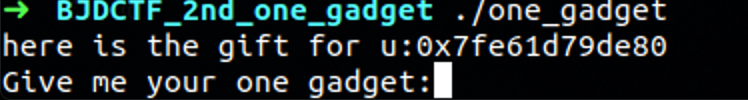
在程序的函数中可以看到
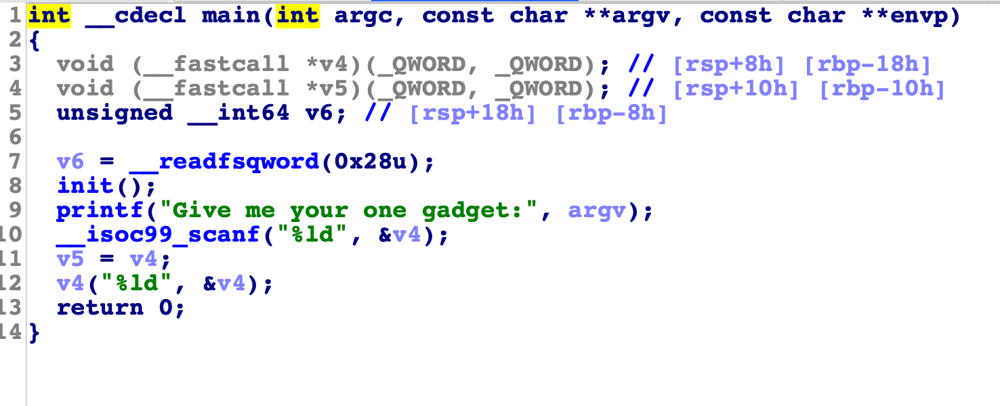
直接就是跳到了这个gadget的位置
那么思路就是，通过printf的地址计算出libc的基地址；
之后用one_gadget搜索其中的system或execve，直接把gadget输入给程序
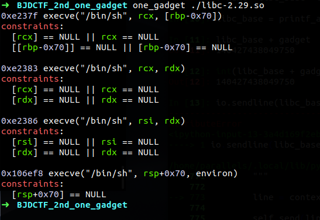
测试后最后一个gadget是可以正常执行的
1 | from pwn import * |
ciscn_2019_n_8
执行一下的效果
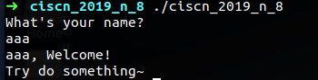
是一个输入名字的程序
安全机制基本都开了
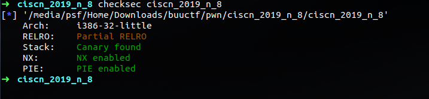
查看main函数，可以看到进行了一个判断，如果打到了这个点就会执行bin/sh
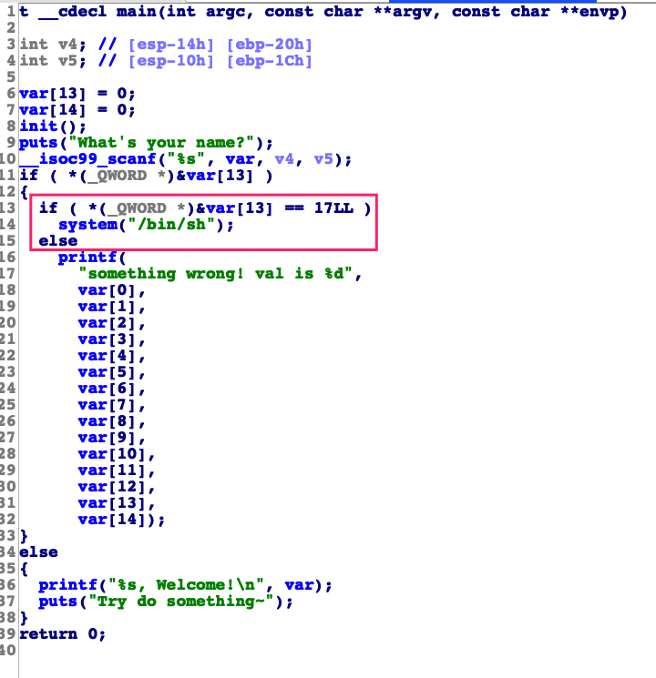
但是我们输入aaa显然连那个大的判断if都没有进入
这里观察一下其实就是让输入的var[13]不为0
Var的长度超过14就可以，而调用了system的那个小if则是判断var[13]是否等于17
只是要注意这里var是当作QWORD读的
QWORD是4个字节，也就是说13*4+1的位置要是17
1 | from pwn import * |
not_the_same_3dsctf_2016
检查安全机制
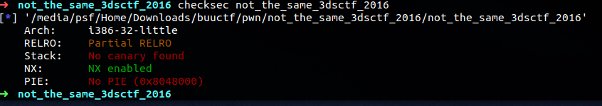
只开启了NX
main函数主要是一个gets输入
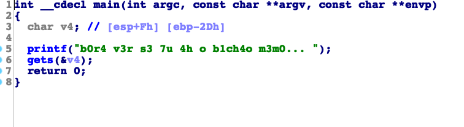
看到这个v4和ebp存在0x2d的距离
搜索字符串发现有一个flag.txt
查找reference找到这样一个get_secret函数
这个函数首先打开了文件flag.txt，之后用fgets从v0句柄读内容到fl4g这段内存空间
fl4g位于bss段
有了这些内容，我们想要构造的应该就是这样一个调用链：首先溢出控制返回地址，覆盖返回地址填写为get_secret函数，这个函数执行完毕之后会在bss段fl4g处写入flag.txt的内容；
之后利用rop调用write函数读出来这个地方的值；
1 | from pwn import * |
和之前那道题目类似，这个题目也存在另一种解法
就是使用mprotect修改bss段的权限，之后再跳转到写在bss段的shellcode
jarvisoj_level2
首先查安全机制和架构
运行一下效果就是输入一个字符串
main函数的代码
vulnerable 函数中的代码
read了0x100，但是距离ebp只有0x88
由于开启了nx，应该也是用rop来做了
直接溢出，rop跳到system
查找字符串还发现很贴心的给了/bin/sh
虽然这个字符串并没有调用的地方
1 | from pwn import * |
[BJDCTF_2020] babystack
首先checksec
64位程序，开启了NX
反编译得到main函数
首先输入了一个数字，给到了nbytes
之后用read来读入nbytes个字节到buf
buf距离rbp存在0x10h
另外文件中存在一个backdoor函数
可以直接调用得到shell
思路就是直接溢出0x10到rbp，然后8个字节rbp，最后覆盖返回地址到backdoor就完了
1 | from pwn import * |
jarvisoj_level2_x64
首先checksec
这个题目和之前的jarvisoj_level2基本是一样的思路，主要差异就在于这个是64位的
因为是64位的，函数调用时不是先看栈里的数据，顺序首先是几个寄存器
当参数少于7个时， 参数从左到右放入寄存器: rdi, rsi, rdx, rcx, r8, r9
我们想要调用起来system('/bin/sh')
只需要这一个参数，所以需要将/bin/sh弹出到rdi中
1 | from pwn import * |
ciscn_2019_n_5
首先检查安全机制
运行尝试一下
反编译得到main函数代码
text距离rbp有20h
这里的name是位于bss段的
第一个read读name的时候可以读到0x64的长度
之后gets函数是读text，这里可以溢出rbp
那么思路应该就是首先在第一个输入name的时候将shellcode输入到bss段
之后使用gets函数溢出rbp，跳转到bss那里执行代码
1 | from pwn import * |
HarekazeCTF2019_babyrop
首先检查安全机制
开启了NX，是64位的程序
在IDA中反编译main函数
输入了一个v4，之后输出，这里的scanf存在溢出
数据段中存在一个后门字符串
思路就是溢出返回地址，之后调用system函数
payload还是比较简单的，和之前例子差不多
1 | from pwn import * |
但是拿到shell之后发现flag居然不在根目录，少见
ciscn_2019_ne_5
首先检查安全机制
开启了NX的32位程序
运行后是一个输入password的地方
反编译逆向看到
输入administrator就可以过去，后面的程序是一个循环
输出显示的只有4个选项，但是实际上看到switch中还有一个隐藏的选项
AddLog这个选项通过scanf输入一个log，长度限制是128
在GetFlag这个函数中有一个strcpy，但是这里的目标串dst距离ebp只有0x48
因此有可能溢出
在选项Print那里是用到了system
在程序中没有找到/bin/sh
但是存在sh
那么思路就是首先用第一个选项输入payload
之后用选项4造成溢出并且调用system("sh")
1 | from pwn import * |
ciscn_2019_s_3
首先checksec
开启了NX的64位程序
这个程序比较奇怪，反编译了vuln函数之后可以看到
是调用了一次read，一次write
但这里没法直接看到具体调用的参数，用gdb跑起来看一下
跑到read这里的时候的三个参数分别是
1 | read(0,buf,0x400); |
也就是说从stdin读了最多0x400到栈上
之后又调用了write函数，执行到这里的时候各个参数为
1 | write(1,buf,0x30); |
也就是说从栈上的buf将0x30长度的内容写到stdout上
但是这个vuln函数向下执行的时候就没办法正常的返回了，因为栈上已经都是’a’了
计算一下偏移，81-65=16
由于开启了NX，这个明显要用ROP了
由于是64位的程序，很可能是ret2csu
另外程序还给了一个gadget的函数，里面存在几个可以用到的gadget
这一个函数中给到了三个gadget
这里给出的一个mov rax,3Bh; retn
之后可以尝试去调用syscall，因为3Bh对应的59在系统调用号中正好是execve
全部的系统调用号对应表：https://www.cnblogs.com/tcctw/p/11450449.html
如果我们想要执行execve("/bin/sh")，那么就需要在栈中存储这个字符串，之后将这个字符串的地址赋给rdi，最后调用execve
在执行到write的那个syscall时，栈中rsi指向了栈中的buffer
由于这里输出的是0x30的内容，此时栈顶是从上面字符串c开始的位置
因此输出0x30的内容的话，会将栈中另外两个内容输出出来，这其中恰好有一个是指向栈上的地址
在上面的图中就是0x00007fffffffde38以及另外一个0x0000000100000000
这个de38距离我们字符串的开头dd20相差了0x118
我们就可以用得到的这个值进行定位
至于调用execve的过程，首先将rax设置为execve的调用号
之后ret回来之后设置一下几个寄存器中的值
需要注意的是，execve函数在调用时，实际上需要三个参数，最开始尝试直接运行execve('/bin/sh')失败了，网上查了说后面两个参数需要为0，也就是说在运行时我们需要令rdi=*"/bin/sh", rsi=0, rdx=0
但是在gadget中搜索没有找到为rdx赋值的gadget
我们就只能是用到ret2csu来控制rdx的值了
首先执行__libc_start_main中的后面一部分pop
之后执行前面那一块的mov
这里我们的目的是给rdx赋值，所以需要控制r13
由于我们设置rbx=0，实际上call的位置就是r12寄存器控制的，这里设置r12的值为栈上当前下一个地址，即pop_rdi的地址
1 | payload = '/bin/sh\x00'*2 + p64(rax_3b) |
写的时候发现一个问题就是第一次payload回来的位置不对，这个程序经过了一次调用vuln，所以回来的地址应该是elf.sym['vuln']，之前写成main就错了
1 | from pwn import * |
这个题目还可以用SROP来做，之后有机会再写。
铁人三项_2018_rop
首先检查安全机制
开启了NX的32位程序
main函数反编译后发现里面按顺序调用了两个函数
其中vulnerable_function存在溢出
没有在程序中找到system、binsh这些
所以就当作ret2libc来做
首先用write输出write或read的got表中的真实地址，之后用LibcSearcher查libc的版本
最后计算system、binsh的偏移拿shell
1 | from pwn import * |
bjdctf_2020_babyrop
首先检查安全机制
开启了NX的64位程序
vuln函数就是一个read读了0x64，但是距离rbp只有0x20，造成溢出
本质上和上面那道题目是一样的，就是ret2libc
首先通过puts函数泄漏puts在got表中的地址
之后用LibcSearcher查找libc的版本，最后调用system("/bin/sh")
但是也存在一点点和前面差异的地方
一是puts函数在得到地址的时候是一个6字节的值，而不是8字节，需要一点点处理
另外就是因为程序是64位的，需要通过rdi传参
1 | from pwn import * |
这个代码在执行时会查到好几个版本的Libc，其中选择的是标号为2的可以拿到shell